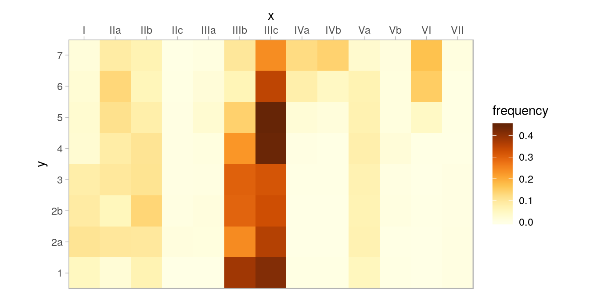
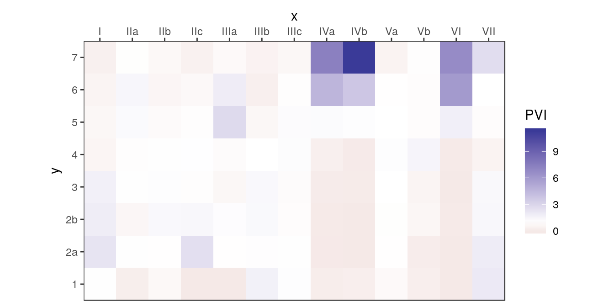
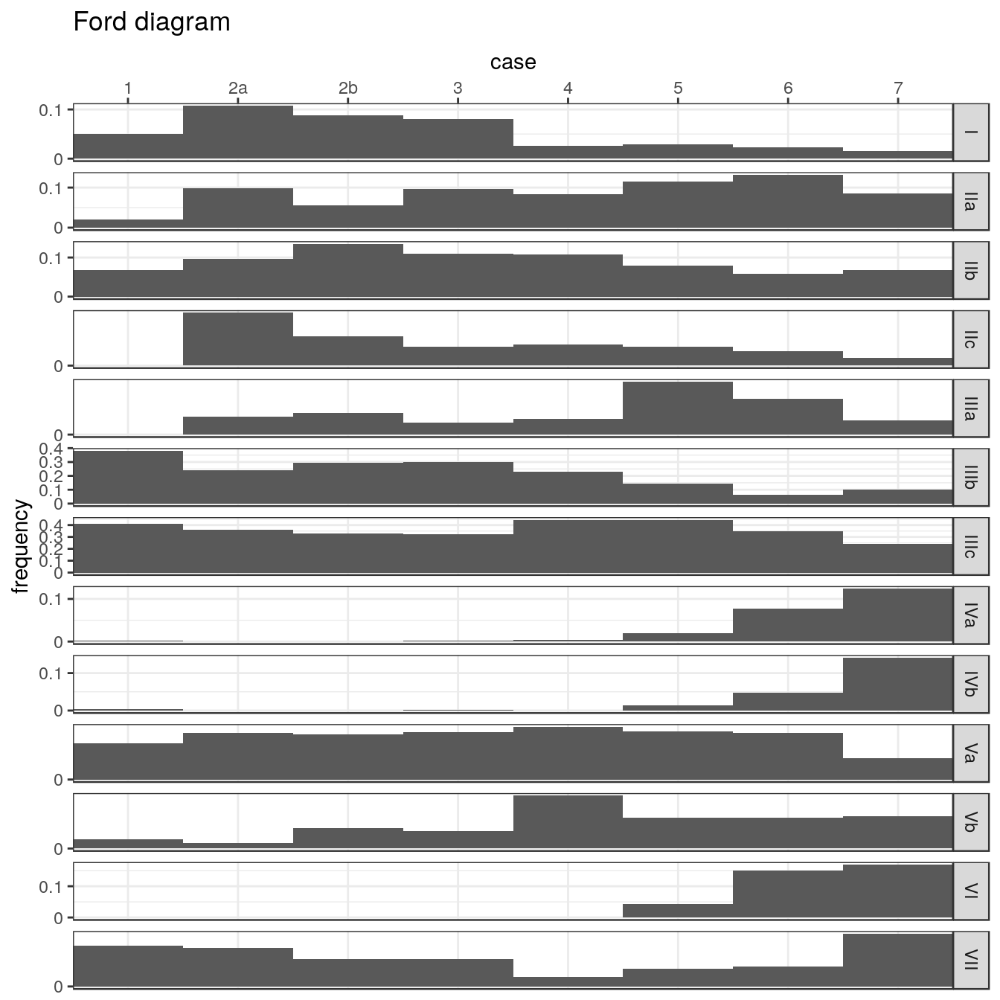
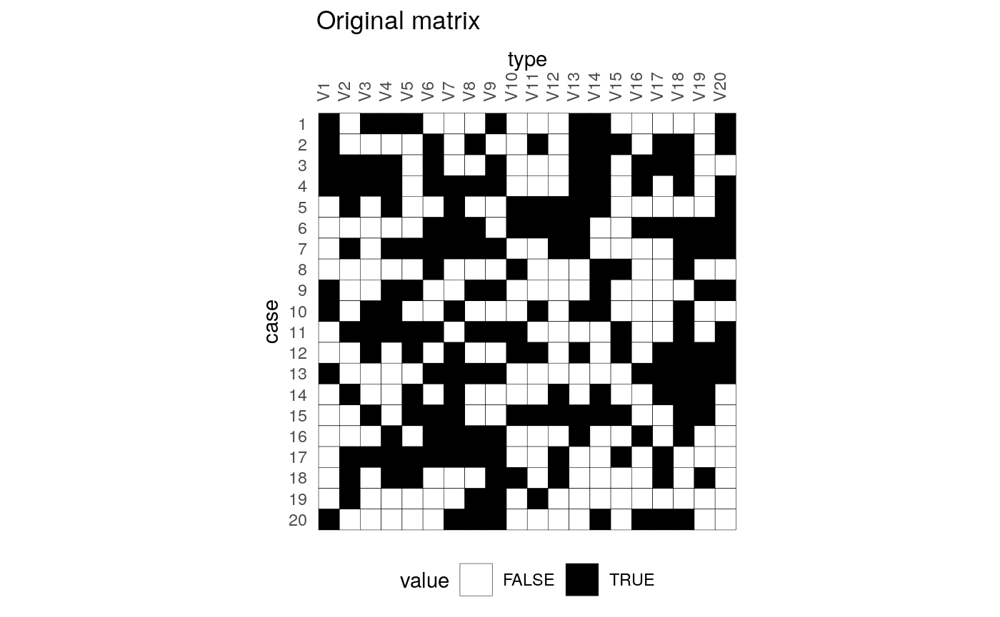
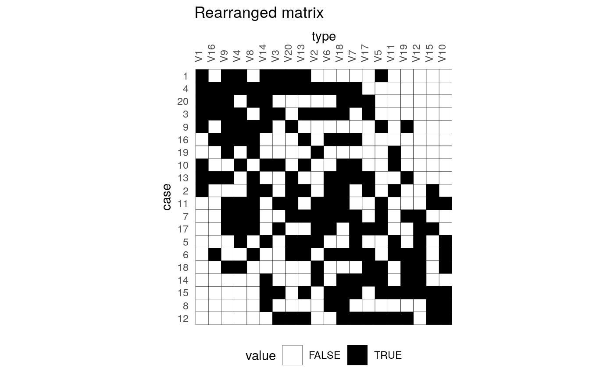
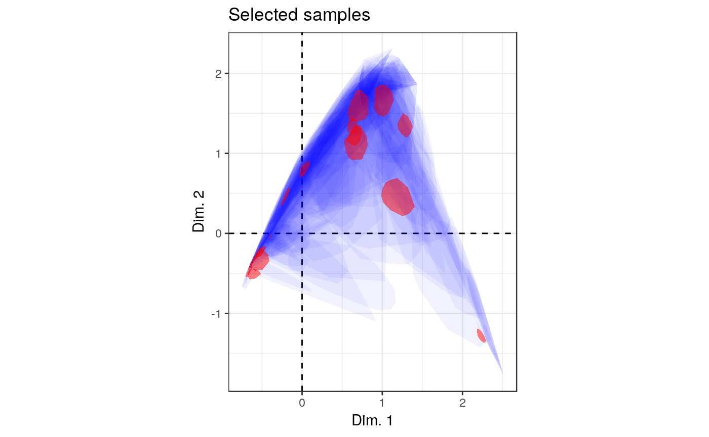
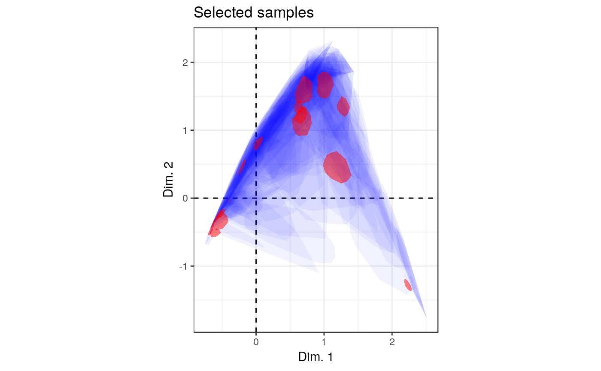
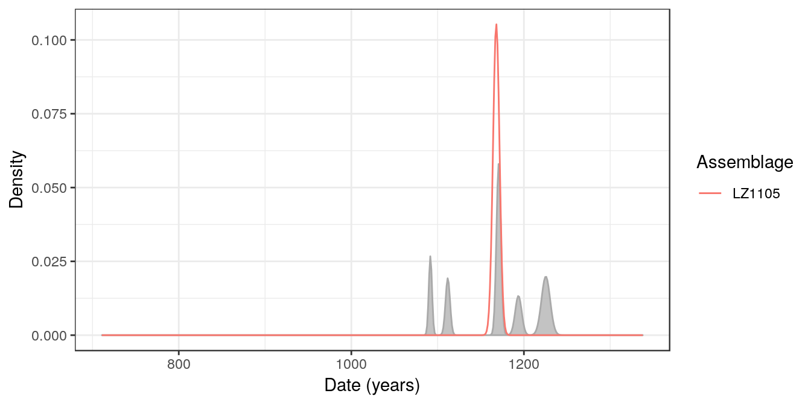

Overview
tabula provides an easy way to examine archaeological count data (artifacts, faunal remains, etc.). This package includes several measures of diversity: e.g. richness and rarefaction (Chao1, Chao2, ACE, ICE, etc.), diversity/dominance and evenness (Brillouin, Shannon, Simpson, etc.), turnover and similarity (Brainerd-Robinson, …). It also provides matrix seriation methods (reciprocal ranking, CA-based seriation) for chronological modeling and dating. The package make it easy to visualize count data and statistical thresholds: rank/abundance plots, Ford and Bertin diagrams, etc.
Data matrix
tabula provides a set of S4 classes that extend the matrix data type from R base. These new classes represent different special types of matrix.
- Abundance matrix:
-
CountMatrixrepresents count data, -
FrequencyMatrixrepresents frequency data.
-
- Logical matrix:
-
IncidenceMatrixrepresents presence/absence data.
-
- Numeric matrix:
-
OccurrenceMatrixrepresents a co-occurence matrix. -
SimilarityMatrixrepresents a (dis)similarity matrix.
-
It assumes that you keep your data tidy: each variable (taxon/type) must be saved in its own column and each observation (sample/case) must be saved in its own row. Missing values are not allowed.
Definitions
Abundance matix
Count matrix
We denote the \(m \times p\) count matrix by \(A = \left[ a_{ij} \right] ~\forall i \in \left[ 1,m \right], j \in \left[ 1,p \right]\) with row and column sums:
\[\begin{align} a_{i \cdot} = \sum_{j = 1}^{p} a_{ij} && a_{\cdot j} = \sum_{i = 1}^{m} a_{ij} && a_{\cdot \cdot} = \sum_{i = 1}^{m} \sum_{j = 1}^{p} a_{ij} && \forall a_{ij} \in \mathbb{N} \end{align}\]
Frequency matrix
A frequency matrix represents relative abundances.
We denote the \(m \times p\) frequency matrix by \(B = \left[ b_{ij} \right] ~\forall i \in \left[ 1,m \right], j \in \left[ 1,p \right]\) with row and column sums:
\[\begin{align} b_{i \cdot} = \sum_{j = 1}^{p} b_{ij} = 1 && b_{\cdot j} = \sum_{i = 1}^{m} b_{ij} && b_{\cdot \cdot} = \sum_{i = 1}^{m} \sum_{j = 1}^{p} b_{ij} && \forall b_{ij} \in \left[ 0,1 \right] \end{align}\]
Logical matrix
Incidence matrix
We denote the \(m \times p\) incidence matrix by \(C = \left[ c_{ij} \right] ~\forall i \in \left[ 1,m \right], j \in \left[ 1,p \right]\) with row and column sums:
\[\begin{align} c_{i \cdot} = \sum_{j = 1}^{p} c_{ij} && c_{\cdot j} = \sum_{i = 1}^{m} c_{ij} && c_{\cdot \cdot} = \sum_{i = 1}^{m} \sum_{j = 1}^{p} c_{ij} && \forall c_{ij} \in \lbrace 0,1 \rbrace \end{align}\]
Numeric matrix
Co-occurrence matrix
A co-occurrence matrix is a symetric matrix with zeros on its main diagonal, which works out how many times (expressed in percent) each pairs of taxa occur together in at least one sample.
The \(p \times p\) co-occurrence matrix \(D = \left[ d_{i,j} \right] ~\forall i,j \in \left[ 1,p \right]\) is defined over an \(m \times p\) abundance matrix \(A = \left[ a_{x,y} \right] ~\forall x \in \left[ 1,m \right], y \in \left[ 1,p \right]\) as:
\[ d_{i,j} = \sum_{x = 1}^{m} \bigcap_{y = i}^{j} a_{xy} \]
with row and column sums:
\[\begin{align} d_{i \cdot} = \sum_{j \geqslant i}^{p} d_{ij} && d_{\cdot j} = \sum_{i \leqslant j}^{p} d_{ij} && d_{\cdot \cdot} = \sum_{i = 1}^{p} \sum_{j \geqslant i}^{p} d_{ij} && \forall d_{ij} \in \mathbb{N} \end{align}\]
Usage
Create
These new classes are of simple use, on the same way as the base matrix:
# Create a count data matrix
CountMatrix(data = sample(0:10, 100, TRUE),
nrow = 10, ncol = 10)
#> 10 x 10 count data matrix:
#> V1 V2 V3 V4 V5 V6 V7 V8 V9 V10
#> 1 2 5 2 7 0 3 8 9 3 6
#> 2 4 10 7 9 0 8 1 8 0 10
#> 3 4 4 3 5 9 10 5 5 9 5
#> 4 0 3 9 0 5 8 7 3 9 4
#> 5 5 5 6 2 0 0 2 10 5 4
#> 6 10 9 6 2 7 5 0 1 4 3
#> 7 1 4 1 3 3 7 6 2 6 7
#> 8 5 2 6 5 5 0 8 6 10 8
#> 9 2 7 6 2 6 5 10 6 5 10
#> 10 1 4 2 3 10 7 6 1 10 2
# Create an incidence (presence/absence) matrix
# Numeric values are coerced to logical as by as.logical
IncidenceMatrix(data = sample(0:1, 100, TRUE),
nrow = 10, ncol = 10)
#> 10 x 10 presence/absence data matrix:
#> V1 V2 V3 V4 V5 V6 V7 V8 V9 V10
#> 1 FALSE TRUE TRUE TRUE FALSE FALSE TRUE FALSE FALSE TRUE
#> 2 TRUE FALSE FALSE TRUE FALSE TRUE TRUE TRUE FALSE FALSE
#> 3 FALSE TRUE FALSE TRUE TRUE TRUE TRUE FALSE FALSE FALSE
#> 4 FALSE FALSE FALSE TRUE TRUE FALSE TRUE TRUE FALSE FALSE
#> 5 TRUE FALSE FALSE TRUE TRUE TRUE TRUE FALSE FALSE TRUE
#> 6 FALSE TRUE FALSE FALSE TRUE FALSE FALSE FALSE TRUE TRUE
#> 7 TRUE TRUE FALSE FALSE FALSE FALSE FALSE FALSE FALSE FALSE
#> 8 TRUE FALSE FALSE TRUE FALSE TRUE TRUE FALSE TRUE FALSE
#> 9 TRUE TRUE FALSE FALSE FALSE TRUE TRUE TRUE TRUE TRUE
#> 10 TRUE TRUE FALSE TRUE FALSE TRUE TRUE FALSE TRUE TRUENote that a FrequencyMatrix can only be created by coercion from a CountMatrix to ensure data integrity (see below).
Coerce
tabula uses coercing mechanisms (with validation methods) for data type conversions:
# Create a count matrix
# Numeric values are coerced to integer and hence truncated towards zero
A1 <- CountMatrix(data = sample(0:10, 100, TRUE),
nrow = 10, ncol = 10)
# Coerce counts to frequencies
B <- as(A1, "FrequencyMatrix")
# Row sums are internally stored before coercing to a frequency matrix
totals(B)
#> 1 2 3 4 5 6 7 8 9 10
#> 56 56 77 57 58 47 57 47 54 45
# This allows to restore the source data
A2 <- as(B, "CountMatrix")
all(A1 == A2)
#> [1] TRUE
# Coerce to presence/absence
C <- as(A1, "IncidenceMatrix")
# Coerce to a co-occurrence matrix
D <- as(A1, "OccurrenceMatrix")Visualization
Several types of graphs are available in tabula which uses ggplot2 for plotting informations. This makes it easy to customize diagramms (e.g. using themes and scales).
Spot plot
Spot matrix allows direct examination of data (above/below some threshold):
# Plot frequencies with the column means as a threshold
mississippi_counts <- as(mississippi, "CountMatrix")
plotSpot(mississippi_counts, threshold = mean) +
ggplot2::labs(size = "Frequency", colour = "Mean") +
khroma::scale_colour_vibrant()
# Plot co-occurence of types
# (i.e. how many times (percent) each pairs of taxa occur together
# in at least one sample.)
mississippi_occ <- as(mississippi, "OccurrenceMatrix")
plotSpot(mississippi_occ) +
ggplot2::labs(size = "", colour = "Co-occurrence") +
ggplot2::theme(legend.box = "horizontal") +
khroma::scale_colour_YlOrBr()
Matrix plot
Abundance matrix can be displayed as a heatmap of relative abundances (frequency), or as percentages of the independence value (in french, “pourcentages de valeur d’indépendance”, PVI).
# Reproduce B. Desachy's matrigraphe
boves_counts <- as(boves, "CountMatrix")
plotMatrix(boves_counts) +
ggplot2::theme_light() +
khroma::scale_fill_YlOrBr()
PVI is calculated for each cell as the percentage to the column theoretical independence value: PVI greater than \(1\) represent positive deviations from the independance, whereas PVI smaller than \(1\) represent negative deviations (Desachy 2004). The PVI matrix allows to explore deviations from independence (an intuitive graphical approach to \(\chi^2\)), in such a way that a high-contrast matrix has quite significant deviations, with a low risk of being due to randomness (Desachy 2004).
# Reproduce B. Desachy's matrigraphe
plotMatrix(boves_counts, PVI = TRUE) +
ggplot2::scale_fill_gradient2(midpoint = 1) +
ggplot2::theme_bw()
Bar plot
Bertin or Ford (battleship curve) diagramms can also be plotted, with statistic threshold.
plotBar(boves_counts, center = FALSE, horizontal = FALSE) +
ggplot2::labs(title = "Ford diagram") +
ggplot2::theme_bw()
plotBar(boves_counts, center = TRUE, horizontal = FALSE) +
ggplot2::labs(title = "Bertin diagram") +
ggplot2::theme_light()
The positive difference from the column mean percentage (in french “écart positif au pourcentage moyen”, EPPM) represents a deviation from the situation of statistical independence (Desachy 2004). As independence can be interpreted as the absence of relationships between types and the chronological order of the assemblages, EPPM is a usefull graphical tool to explore significance of relationship between rows and columns related to seriation (Desachy 2004).
# Reproduce B. Desachy's sériographe
plotBar(boves_counts, EPPM = TRUE) +
khroma::scale_fill_bright()
Seriation
The matrix seriation problem in archaeology is based on three conditions and two assumptions, which Dunnell (1970) summarizes as follows.
The homogeneity conditions state that all the groups included in a seriation must:
- Be of comparable duration,
- Belong to the same cultural tradition,
- Come from the same local area.
The mathematical assumptions state that the distribution of any historical or temporal class:
- Is continuous through time,
- Exhibits the form of a unimodal curve.
Theses assumptions create a distributional model and ordering is accomplished by arranging the matrix so that the class distributions approximate the required pattern. The resulting order is infered to be chronological.
Reciprocal ranking
Reciprocal ranking iteratively rearrange rows and/or columns according to their weighted rank in the data matrix until convergence (Ihm 2005).
For a given incidence matrix \(C\):
- The rows of \(C\) are rearranged in increasing order of:
\[ x_{i} = \sum_{j = 1}^{p} j \frac{c_{ij}}{c_{i \cdot}} \]
- The columns of \(C\) are rearranged in a similar way:
\[ y_{j} = \sum_{i = 1}^{m} i \frac{c_{ij}}{c_{\cdot j}} \]
These two steps are repeated until convergence. Note that this procedure could enter into an infinite loop.
# Build an incidence matrix with random data
set.seed(12345)
incidence1 <- IncidenceMatrix(data = sample(0:1, 400, TRUE, c(0.6, 0.4)),
nrow = 20)
# Get seriation order on rows and columns
# If no convergence is reached before the maximum number of iterations (100),
# it stops with a warning.
(indices <- seriate(incidence1, method = "reciprocal", margin = c(1, 2),
stop = 100))
#> Permutation order for matrix seriation:
#> Row order: 1 4 20 3 9 16 19 10 13 2 11 7 17 5 6 18 14 15 8 12
#> Column order: 1 16 9 4 8 14 3 20 13 2 6 18 7 17 5 11 19 12 15 10
#> Method: reciprocal
# Permute matrix rows and columns
incidence2 <- permute(incidence1, indices)
# Plot matrix
plotMatrix(incidence1) +
ggplot2::labs(title = "Original matrix") +
ggplot2::theme(legend.position = "bottom") +
ggplot2::scale_fill_manual(values = c("TRUE" = "black", "FALSE" = "white"))
plotMatrix(incidence2) +
ggplot2::labs(title = "Rearranged matrix") +
ggplot2::theme(legend.position = "bottom") +
ggplot2::scale_fill_manual(values = c("TRUE" = "black", "FALSE" = "white"))
Reciprocal averaging
# Reproduces Desachy 2004 results
## Coerce dataset to an abundance matrix
compiegne_counts <- as(compiegne, "CountMatrix")
## Plot original data matrix
plotBar(compiegne_counts, EPPM = TRUE) +
ggplot2::labs(title = "Original dataset") +
ggplot2::theme_bw() +
ggplot2::theme(panel.spacing = ggplot2::unit(0, "lines"),
panel.border = ggplot2::element_rect(colour = NA),
legend.position = "bottom")
## Get seriation order for columns on EPPM using the reciprocal averaging method
## Expected column order: N, A, C, K, P, L, B, E, I, M, D, G, O, J, F, H
compiegne_indices <- seriate(compiegne_counts, method = "reciprocal",
EPPM = TRUE, margin = 2)
## Permute columns
compiegne_seriation <- permute(compiegne_counts, compiegne_indices)
## Plot new matrix
plotBar(compiegne_seriation, EPPM = TRUE) +
ggplot2::labs(title = "Reordered dataset") +
ggplot2::theme_bw() +
ggplot2::theme(panel.spacing = ggplot2::unit(0, "lines"),
panel.border = ggplot2::element_rect(colour = NA),
legend.position = "bottom")

Correspondance analysis
Correspondance Analysis (CA) is an effective method for the seriation of archaeological assemblages. The order of the rows and columns is given by the coordinates along one dimension of the CA space, assumed to account for temporal variation. The direction of temporal change within the correspondance analysis space is arbitrary: additional information is needed to determine the actual order in time.
## Coerce dataset to an abundance matrix
zuni_counts <- as(zuni, "CountMatrix")
# Correspondance analysis of the whole dataset
ca <- FactoMineR::CA(zuni_counts, graph = FALSE)
# Plot CA results
ggplot2::ggplot(mapping = ggplot2::aes(x = `Dim 1`, y = `Dim 2`)) +
ggplot2::geom_vline(xintercept = 0, linetype = 2) +
ggplot2::geom_hline(yintercept = 0, linetype = 2) +
ggplot2::geom_point(data = as.data.frame(ca$row$coord), color = "black") +
ggplot2::geom_point(data = as.data.frame(ca$col$coord), color = "red") +
ggplot2::coord_fixed() +
ggplot2::theme_bw()
# Get row permutations from CA coordinates
zuni_indices <- seriate(zuni_counts, method = "correspondance", margin = 1)
# Permute data matrix
zuni_seriation <- permute(zuni_counts, zuni_indices)
# Plot Ford diagram
# Warning: this may take a few seconds!
plotBar(zuni_seriation, level = FALSE) +
ggplot2:: theme(axis.text = ggplot2::element_blank(),
axis.ticks = ggplot2::element_blank(),
axis.title = ggplot2::element_blank())
Refine CA-based seriation
Peeples and Schachner (2012) propose a procedure to identify samples that are subject to sampling error or samples that have underlying structural relationships and might be influencing the ordering along the CA space. This relies on a partial bootstrap approach to CA-based seriation where each sample is replicated n times. The maximum dimension length of the convex hull around the sample point cloud allows to remove samples for a given cutoff value.
According to Peeples and Schachner (2012), “[this] point removal procedure [results in] a reduced dataset where the position of individuals within the CA are highly stable and which produces an ordering consistend with the assumptions of frequency seriation.”
# Reproduces Peeples and Schachner 2012 results
## Samples with convex hull maximum dimension length greater than the cutoff
## value will be marked for removal.
## Define cutoff as one standard deviation above the mean
fun <- function(x) { mean(x) + sd(x) }
## Get indices of samples to be kept
## Warning: this may take a few seconds!
set.seed(123)
zuni_keep <- refine(zuni_counts, cutoff = fun, n = 1000)
## Plot convex hull
## blue: convex hull for samples; red: convex hull for types
### All bootstrap samples
ggplot2::ggplot(mapping = ggplot2::aes(x = x, y = y, group = id)) +
ggplot2::geom_vline(xintercept = 0, linetype = 2) +
ggplot2::geom_hline(yintercept = 0, linetype = 2) +
ggplot2::geom_polygon(data = zuni_keep[["rows"]],
fill = "blue", alpha = 0.05) +
ggplot2::geom_polygon(data = zuni_keep[["columns"]],
fill = "red", alpha = 0.5) +
ggplot2::coord_fixed() +
ggplot2::theme_bw() +
ggplot2::labs(title = "Whole dataset", x = "Dim. 1", y = "Dim. 2")
### Only retained samples
ggplot2::ggplot(mapping = ggplot2::aes(x = x, y = y, group = id)) +
ggplot2::geom_vline(xintercept = 0, linetype = 2) +
ggplot2::geom_hline(yintercept = 0, linetype = 2) +
ggplot2::geom_polygon(data = subset(zuni_keep[["rows"]],
id %in% names(zuni_keep[["keep"]])),
fill = "blue", alpha = 0.05) +
ggplot2::geom_polygon(data = zuni_keep[["columns"]],
fill = "red", alpha = 0.5) +
ggplot2::coord_fixed() +
ggplot2::theme_bw() +
ggplot2::labs(title = "Selected samples", x = "Dim. 1", y = "Dim. 2") 

If the results of refine is used as an input argument in seriate, a correspondance analysis is performed on the subset of object which matches the samples to be kept. Then excluded samples are projected onto the dimensions of the CA coordinate space using the row transition formulae. Finally, row coordinates onto the first dimension give the seriation order.
## Get CA-based seriation order
(zuni_refined <- seriate(zuni_counts, zuni_keep, margin = 1))
#> Permutation order for matrix seriation:
#> Row order: 372 350 387 367 110 417 364 357 407 406 160 344 348 356 373 384 378 362 339 383... (400 more)
#> Column order: 1 2 3 4 5 6 7 8 9 10 11 12 13 14 15 16 17 18
#> Method: refined correspondanceDating
This package provides an implementation of the chronological modeling method developed by Bellanger and Husi (2012). This allows the construction of two different probability estimate density curves of archaeological assembalge dates. The first one (event date) represents the terminus post-quem of an archaeological assemblage: an event dated in calendar time. The second represents the “chronological profile” of the assemblage: the accumulation rate (Bellanger and Husi 2012).
This method - somewhat similar to that described by Poblome and Groenen (2003) - is based on the adjustment of a Gaussian multiple linear regression model on the factors resulting from a correspondence analysis. This model results from the known dates of a selection of reliable contexts and allows to predict the event dates of the remaining assemblage with a 95% confidence interval.
Since correspondence analysis allows the rows and columns of a contingency table to be projected in the same space (through the transition formula), it is possible to estimate the date of each fabric using the previous model. Finally, the accumulation date of each context is defined as the mean of the fabric dates, weighted by their relative proportions in that context (akin to the Mean Ceramic Date proposed by South (1977)).
This method relies on strong archaeological and statistical assumptions. Use it only if you know what you are doing. Note that this implementation is experimental (see help(dateEvent)).
# Coerce dataset to abundance (count) matrix
zuni <- as(zuni, "CountMatrix")
# Assume that some assemblages are reliably dated (this is NOT a real example).
# The names of the vector entries must match the names of the assemblages.
dates <- list(
LZ0569 = 1097, LZ0279 = 1119, CS16 = 1328, LZ0066 = 1111,
LZ0852 = 1216, LZ1209 = 1251, CS144 = 1262, LZ0563 = 1206,
LZ0329 = 1076, LZ0005Q = 859, LZ0322 = 1109, LZ0067 = 863,
LZ0578 = 1180, LZ0227 = 1104, LZ0610 = 1074
)
# Model the event and accumulation date for each assemblage.
(model <- dateEvent(zuni, dates, cutoff = 90))
#> Modelled event date:
#> R2: 0.9997194
#> Residual standard deviation: 4 years
#> CI: 95 %The estimated probability density of an event date is approached by a normal distribution. The distribution of the accumulation time of each context is approached by a Gaussian mixture.
# Plot event (line) and accumulation (grey area) date distributions
plotDate(model, select = "LZ1105") +
ggplot2::theme_bw()
Resampling methods can be used to check the stability of the resulting model. If jackknife is TRUE, one type/fabric is removed at a time and all statistics are recalculated. In this way, one can assess whether certain type/fabric has a substantial influence on the date estimate. If bootstrap is TRUE, a large number of new bootstrap assemblages is created, with the same sample size, by resampling the original assemblage with replacement. Then, examination of the bootstrap statistics makes it possible to pinpoint assemblages that require further investigation.
# Check model variability
checked <- dateEvent(zuni, dates, cutoff = 90,
jackknife = TRUE, bootstrap = TRUE, n = 1000)
# Extract results for the first 5 assemblages
## Modeled event dates
checked["rows", 1:5]
#> id estimation earliest latest error
#> 1 LZ1105 1167.968 1158.235 1177.701 3.786202
#> 2 LZ1103 1142.834 1139.133 1146.534 1.439488
#> 3 LZ1100 1155.673 1147.630 1163.717 3.129114
#> 4 LZ1099 1099.272 1092.153 1106.392 2.769655
#> 5 LZ1097 1088.356 1079.856 1096.856 3.306570
## Jackknife fabrics
checked["jackknife", 1:5]
#> id estimation earliest latest error bias
#> 1 LZ1105 1174.900 1165.167 1184.632 3.786202 117.83615
#> 2 LZ1103 1145.111 1141.411 1148.812 1.439488 38.71922
#> 3 LZ1100 1159.065 1151.022 1167.109 3.129114 57.66493
#> 4 LZ1099 1089.060 1081.940 1096.180 2.769655 -173.61223
#> 5 LZ1097 1081.514 1073.014 1090.014 3.306570 -116.31049
## Bootstrap of assemblages
checked["bootstrap", 1:5]
#> id min Q05 mean Q95 max
#> 1 LZ1105 1110.5901 1140.3476 1168.583 1195.696 1221.696
#> 2 LZ1103 1046.5106 1094.2006 1141.181 1180.590 1218.170
#> 3 LZ1100 1061.6247 1102.9261 1155.101 1200.989 1234.376
#> 4 LZ1099 1088.9400 1090.8833 1099.435 1107.796 1118.772
#> 5 LZ1097 884.4105 997.5937 1087.453 1171.700 1214.822Analysis
\(\alpha\)-diversity
Richness and rarefaction
The number of different taxa, provides an instantly comprehensible expression of diversity. While the number of taxa within a sample is easy to ascertain, as a term, it makes little sense: some taxa may not have been seen, or there may not be a fixed number of taxa (e.g. in an open system; Peet (1974)). As an alternative, richness (\(S\)) can be used for the concept of taxa number (McIntosh 1967).
It is not always possible to ensure that all sample sizes are equal and the number of different taxa increases with sample size and sampling effort (Magurran 1988). Then, rarefaction (\(E(S)\)) is the number of taxa expected if all samples were of a standard size (i.e. taxa per fixed number of individuals). Rarefaction assumes that imbalances between taxa are due to sampling and not to differences in actual abundances. For now, only the Hurlbert (1971) unbiaised estimate of Sander (1968) rarefaction is provided.
The following richness measures are available for count data:
ace- Abundance-based Coverage Estimator (Chao and Lee 1992).
chao1- Chao1 estimator (Chao 1984).
chao1i- Improved Chao1 estimator (Chiu et al. 2014).
margalef- Margalef richness index (Margalef 1958).
menhinick- Menhinick richness index (Menhinick 1964).
none- Returns the number of observed taxa/types.
The following richness measures are available for replicated incidence data:
ice- Incidence-based Coverage Estimator (Chao and Chiu 2016).
chao2- Chao2 estimator (Chao 1987).
chao2i- Improved Chao2 estimator (Chiu et al. 2014).
Diversity and evenness
Diversity can be measured according to several indices. Diversity measurement assumes that all individuals in a specific taxa are equivalent and that all types are equally different from each other (Peet 1974). A measure of diversity can be achieved by using indices built on the relative abundance of taxa. These indices (sometimes referred to as non-parametric indices) benefit from not making assumptions about the underlying distribution of taxa abundance: they only take relative abundances of the species that are present and species richness into account. Peet (1974) refers to them as indices of heterogeneity. Evenness is a measure of how evenly individuals are distributed across the sample.
The following heterogeneity index (\(H\)) and corresponding evenness (\(E\)) measures are available (see Magurran (1988) for details):
berger- Berger-Parker dominance index. The Berger-Parker index expresses the proportional importance of the most abundant type. This metric is highly biased by sample size and richness, moreover it does not make use of all the information available from sample.
brillouin- Brillouin diversity index (Brillouin 1956). The Brillouin index describes a known collection: it does not assume random sampling in an infinite population. Pielou (1975) and Laxton (1978) argues for the use of the Brillouin index in all circumstances, especially in preference to the Shannon index.
mcintosh- McIntosh dominance index (McIntosh 1967). The McIntosh index expresses the heterogeneity of a sample in geometric terms. It describes the sample as a point of a \(S\)-dimensional hypervolume and uses the Euclidean distance of this point from the origin.
shannon- Shannon-Wiener diversity index (Shannon 1948). The Shannon index assumes that individuals are randomly sampled from an infinite population and that all taxa are represented in the sample (it does not reflect the sample size). The main source of error arises from the failure to include all taxa in the sample: this error increases as the proportion of species discovered in the sample declines (Peet 1974; Magurran 1988). The maximum likelihood estimator (MLE) is used for the relative abundance, this is known to be negatively biased by sample size.
simpson- Simpson dominance index for finite sample (Simpson 1949). The Simpson index expresses the probability that two individuals randomly picked from a finite sample belong to two different types. It can be interpreted as the weighted mean of the proportional abundances. This metric is a true probability value, it ranges from \(0\) (perfectly uneven) to \(1\) (perfectly even).
Diversity indices focus on one aspect of the taxa abundance and emphasize either richness (weighting towards uncommon taxa) or dominance (weighting towards abundant taxa; Magurran (1988)).
H <- diversity(
mississippi_counts,
method = c("shannon", "brillouin", "simpson", "mcintosh", "berger"),
simplify = TRUE
)
head(H)
#> shannon brillouin simpson mcintosh berger
#> 10-P-1 1.2027955 1.1572676 0.3166495 0.4714431 0.4052288
#> 11-N-9 0.7646565 0.7541207 0.5537760 0.2650711 0.6965699
#> 11-N-1 0.9293974 0.9192403 0.5047209 0.2975381 0.6638526
#> 11-O-10 0.8228576 0.8085445 0.5072514 0.2990830 0.6332288
#> 11-N-4 0.7901428 0.7823396 0.5018826 0.2997089 0.6034755
#> 13-N-5 0.9998430 0.9442803 0.3823434 0.4229570 0.4430380Note that berger, mcintosh and simpson methods return a dominance index, not the reciprocal form usually adopted, so that an increase in the value of the index accompanies a decrease in diversity.
Corresponding evenness can also be computed :
E <- evenness(
mississippi_counts,
method = c("brillouin", "mcintosh", "shannon", "simpson"),
simplify = TRUE
)
head(E)
#> brillouin mcintosh shannon simpson
#> 10-P-1 0.8655943 0.8666584 0.8676335 0.7895166
#> 11-N-9 0.5491751 0.5108866 0.5515831 0.4514461
#> 11-N-1 0.5168354 0.4888798 0.5187066 0.3302155
#> 11-O-10 0.5086064 0.5196260 0.5112702 0.3942818
#> 11-N-4 0.4894441 0.5269406 0.4909433 0.3984996
#> 13-N-5 0.9074079 0.8881365 0.9100964 0.8718166\(\beta\)-diversity
Similarity
\(\beta\)-diversity can be measured by addressing similarity between pairs of samples/cases (Brainerd-Robinson, Jaccard, Morisita-Horn and Sorenson indices). Similarity bewteen pairs of taxa/types can be measured by assessing the degree of co-occurrence (binomial co-occurrence).
Jaccard, Morisita-Horn and Sorenson indices provide a scale of similarity from \(0\)-\(1\) where \(1\) is perfect similarity and \(0\) is no similarity.
binomial- Binomial co-occurrence assessment. This assesses the degree of co-occurrence between taxa/types within a dataset. The strongest associations are shown by large positive numbers, the strongest segregations by large negative numbers. The Binomial co-occurrence assessment approximates a Z-score.
brainerd- Brainerd-Robinson quantitative index (Brainerd 1951, @robinson1951). This is a city-block metric of similarity between pairs of samples/cases. The Brainerd-Robinson index is scaled between \(0\) and \(200\).
bray- Sorenson quantitative index. Bray and Curtis (1957) modified version of the Sorenson index.
jaccard- Jaccard qualitative (incidence data) index.
morisita- Morisita-Horn quantitative index.
sorenson- Sorenson qualitative (incidence data) index.
# Brainerd-Robinson index
S <- similarity(mississippi_counts, method = "brainerd")
# Plot the similarity matrix
plotSpot(S) +
ggplot2::labs(size = "Similarity", colour = "Similarity") +
khroma::scale_colour_YlOrBr()
Turnover
The several methods can be used to acertain the degree of turnover in taxa composition along a gradient (\(\beta\)-diversity) on qualitative (presence/absence) data. It assumes that the order of the matrix rows (from \(1\) to \(n\)) follows the progression along the gradient/transect.
The following measures are available (see Magurran (1988) for details):
whittaker- Whittaker measure.
cody- Cody measure.
routledge2- Routledge second measure.
routledge3- Routledge third measure. This is the exponential form of the second measure.
wilson- Wilson measure.
References
Bellanger, Lise, and Philippe Husi. 2012. “Statistical Tool for Dating and Interpreting Archaeological Contexts Using Pottery.” Journal of Archaeological Science 39 (4): 777–90. https://doi.org/10.1016/j.jas.2011.06.031.
Brainerd, George W. 1951. “The Place of Chronological Ordering in Archaeological Analysis.” American Antiquity 16 (04): 301–13. https://doi.org/10.2307/276979.
Bray, J. Roger, and J. T. Curtis. 1957. “An Ordination of the Upland Forest Communities of Southern Wisconsin.” Ecological Monographs 27 (4): 325–49. https://doi.org/10.2307/1942268.
Brillouin, Leon. 1956. Science and Information Theory. New York: Academic Press.
Chao, Anne. 1984. “Nonparametric Estimation of the Number of Classes in a Population.” Scandinavian Journal of Statistics 11 (4): 265–70.
———. 1987. “Estimating the Population Size for Capture-Recapture Data with Unequal Catchability.” Biometrics 43 (4): 783–91. https://doi.org/10.2307/2531532.
Chao, Anne, and Chun-Huo Chiu. 2016. “Species Richness: Estimation and Comparison.” In Wiley StatsRef: Statistics Reference Online, edited by N. Balakrishnan, Theodore Colton, Brian Everitt, Walter Piegorsch, Fabrizio Ruggeri, and Jozef L. Teugels, 1–26. Chichester, UK: John Wiley & Sons, Ltd. https://doi.org/10.1002/9781118445112.stat03432.pub2.
Chao, Anne, and Shen-Ming Lee. 1992. “Estimating the Number of Classes via Sample Coverage.” Journal of the American Statistical Association 87 (417): 210–17. https://doi.org/10.1080/01621459.1992.10475194.
Chiu, Chun-Huo, Yi-Ting Wang, Bruno A. Walther, and Anne Chao. 2014. “An Improved Nonparametric Lower Bound of Species Richness via a Modified Good-Turing Frequency Formula.” Biometrics 70 (3): 671–82. https://doi.org/10.1111/biom.12200.
Desachy, Bruno. 2004. “Le sériographe EPPM : un outil informatisé de sériation graphique pour tableaux de comptages.” Revue archéologique de Picardie 3 (1): 39–56. https://doi.org/10.3406/pica.2004.2396.
Dunnell, Robert C. 1970. “Seriation Method and Its Evaluation.” American Antiquity 35 (03): 305–19. https://doi.org/10.2307/278341.
Hurlbert, Stuart H. 1971. “The Nonconcept of Species Diversity: A Critique and Alternative Parameters.” Ecology 52 (4): 577–86. https://doi.org/10.2307/1934145.
Ihm, Peter. 2005. “A Contribution to the History of Seriation in Archaeology.” In Classification the Ubiquitous Challenge, edited by Claus Weihs and Wolfgang Gaul, 307–16. Berlin Heidelberg: Springer. https://doi.org/10.1007/3-540-28084-7_34.
Laxton, R.R. 1978. “The Measure of Diversity.” Journal of Theoretical Biology 70 (1): 51–67. https://doi.org/10.1016/0022-5193(78)90302-8.
Magurran, Anne E. 1988. Ecological Diversity and Its Measurement. Princeton, NJ: Princeton University Press.
Margalef, R. 1958. “Information Theory in Ecology.” General Systems 3: 36–71.
McIntosh, Robert P. 1967. “An Index of Diversity and the Relation of Certain Concepts to Diversity.” Ecology 48 (3): 392–404. https://doi.org/10.2307/1932674.
Menhinick, Edward F. 1964. “A Comparison of Some Species-Individuals Diversity Indices Applied to Samples of Field Insects.” Ecology 45 (4): 859–61. https://doi.org/10.2307/1934933.
Peeples, Matthew A., and Gregson Schachner. 2012. “Refining Correspondence Analysis-Based Ceramic Seriation of Regional Data Sets.” Journal of Archaeological Science 39 (8): 2818–27. https://doi.org/10.1016/j.jas.2012.04.040.
Peet, R K. 1974. “The Measurement of Species Diversity.” Annual Review of Ecology and Systematics 5 (1): 285–307. https://doi.org/10.1146/annurev.es.05.110174.001441.
Pielou, E. C. 1975. Ecological Diversity. New York: Wiley.
Poblome, J., and P. J. F. Groenen. 2003. “Constrained Correspondence Analysis for Seriation of Sagalassos Tablewares.” In The Digital Heritage of Archaeology, edited by M. Doerr and A. Sarris. Athens: Hellenic Ministry of Culture.
Robinson, W. S. 1951. “A Method for Chronologically Ordering Archaeological Deposits.” American Antiquity 16 (04): 293–301. https://doi.org/10.2307/276978.
Sander, Howard L. 1968. “Marine Benthic Diversity: A Comparative Study.” The American Naturalist 102 (925): 243–82. https://www.jstor.org/stable/2459027.
Shannon, C. E. 1948. “A Mathematical Theory of Communication.” The Bell System Technical Journal 27: 379–423. https://doi.org/10.1002/j.1538-7305.1948.tb01338.x.
Simpson, E. H. 1949. “Measurement of Diversity.” Nature 163 (4148): 688–88. https://doi.org/10.1038/163688a0.
South, S. A. 1977. Method and Theory in Historical Archaeology. Studies in Archeology. New York: Academic Press.